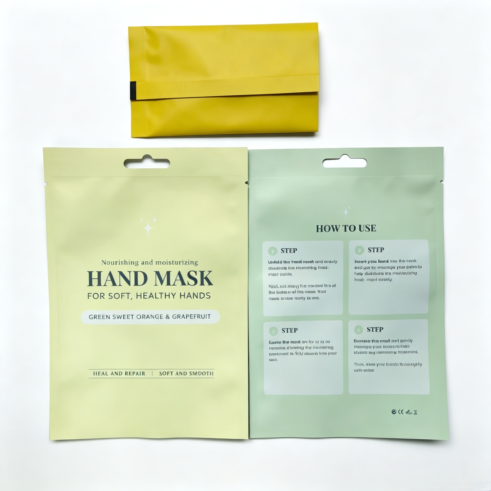

Soft Touch Varnish vs. Regular Matte UV Varnish: Key Differences for Premium Packaging

In flexible packaging and print finishing, varnish selection directly impacts visual appeal, tactile experience, production efficiency, and cost. Two popular matte finishes are regular matte UV varnish and soft touch (velvet) varnish. While both deliver a non-glossy look, they differ significantly in feel, process, pricing, and end-use suitability. Below we break down the core differences to help you choose wisely.
1. Visual & Tactile Experience
Regular Matte UV Varnish
- Gloss level: 10–25 GU (60°), uniform matte with a slight plastic smoothness.
- Feel: Smooth, slightly slippery, minimal tactile depth.
- Fingerprint resistance: Basic; may show light marks under handling.
Soft Touch Varnish (Velvet Matte)
- Gloss level: 0–5 GU (60°), ultra-matte with a deep, rich tone.
- Feel: Velvety, silky, and fingerprint-free; delivers a premium "peach skin" or suede-like texture.
- Perceived luxury: Strong sensory differentiation that elevates brand value.
2. Printing Process & Difficulty
Regular Matte UV Varnish – Easy & Fast
- Cures instantly under UV light (seconds), ideal for high-speed lines.
- Stable viscosity, low risk of blocking, wrinkling, or streaking.
- Compatible with UV, offset, flexo, and screen printing; low defect rate.
Soft Touch Varnish – Demanding & Slow
- Water-based soft touch: Requires hot-air drying (60–90°C), longer lead time, prone to blocking or whitening if under-cured.
- UV soft touch: Faster cure but needs thicker coating, precise UV energy, and strict temperature control.
- Post-processing (foil stamping, die-cutting) often requires 24-hour resting to avoid damage.
3. Cost Comparison (2026 Market, South China)
In terms of comprehensive production cost, regular matte UV varnish is more economical and friendly to large-scale mass orders.
Soft touch varnish uses high-grade raw materials and requires higher-standard production control, so its overall processing cost is obviously higher than ordinary matte UV varnish. It is more suitable for products with sufficient profit space and high positioning demand.
4. Best Applications
Regular Matte UV Varnish – Mass & Cost-Sensitive Packaging
- Food packaging: snack bags, biscuit boxes, instant noodle packs.
- Daily chemicals: detergent labels, shampoo boxes.
- E-commerce & general retail: mailer boxes, cartons, manuals.
Soft Touch Varnish – Premium & Luxury Packaging
- Beauty & cosmetics: high-end skincare boxes, perfume packaging.
- Premium food: chocolate, mooncake, tea, and specialty coffee bags.
- Luxury goods & gifts: gift boxes, notebooks, 3C accessories, and tobacco packaging.
Final Thoughts
Regular matte UV varnish is your go-to for cost-effective, fast, and reliable matte finishing in mass production. Soft touch varnish is the premium choice when sensory experience and brand differentiation matter most—justified by higher perceived value and customer loyalty.
At Shenying Packing, we offer both standard matte UV and high-grade soft touch coating solutions tailored to your budget and brand positioning. Contact our team today to find the perfect finish for your next packaging project.